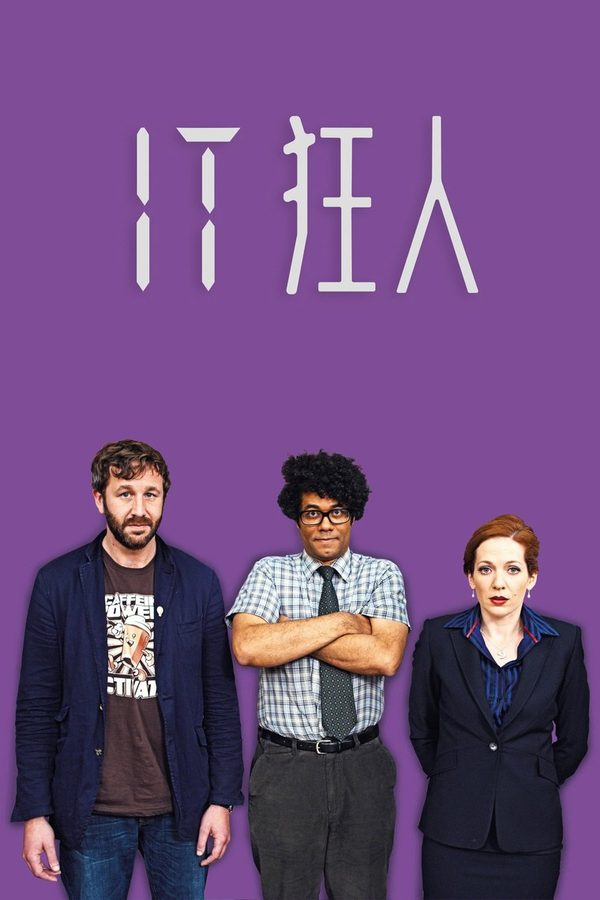
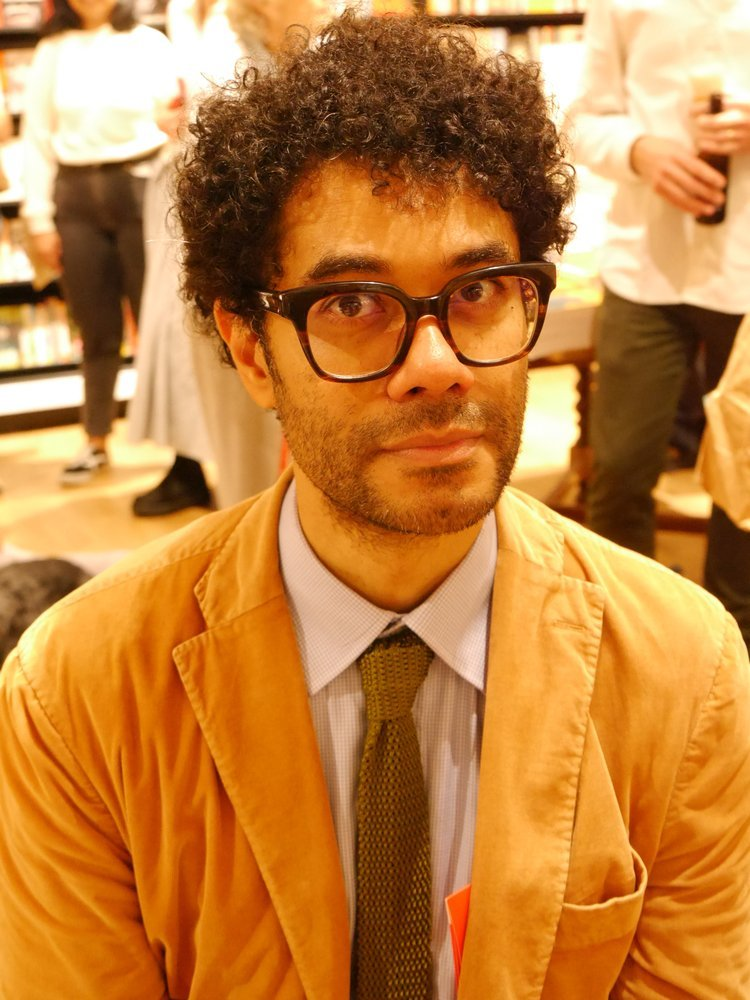
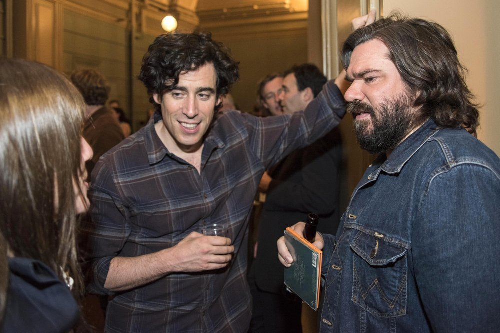
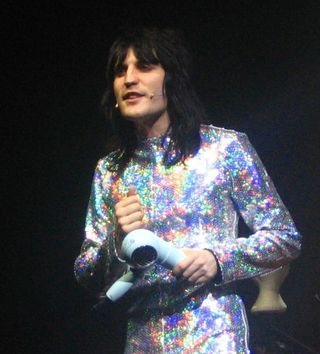

TV SERIES / 情景喜剧
The IT Crowd
IT狂人 · 地下室里的三个技术宅
英国 Channel 4 的极客喜剧巅峰。两个不懂人情世故的技术宅 Roy 与 Moss，加上对电脑一窍不通的主管 Jen，被公司塞进昏暗的 IT basement。它用荒诞到极点的「技术梗」把每个社恐打工人的日常，嘲讽成了三分钟一个爆笑名场面。

TV SERIES / 情景喜剧
IT狂人 · 地下室里的三个技术宅
英国 Channel 4 的极客喜剧巅峰。两个不懂人情世故的技术宅 Roy 与 Moss，加上对电脑一窍不通的主管 Jen，被公司塞进昏暗的 IT basement。它用荒诞到极点的「技术梗」把每个社恐打工人的日常，嘲讽成了三分钟一个爆笑名场面。
故事发生在一家无名大公司的 IT 部门——一间藏在地下室、常年不见天日的办公室。Roy 与 Moss 是一对性格迥异却同样笨拙的程序员：Roy 愤世嫉俗、永远不想接电话；Moss 智商极高却社交白痴，连「把花生放进杯子」都能引发灾难。某天，公司空降了新任「IT 主管」Jen，而她连鼠标都不会用，却凭着「我做过很多事」的自信成了两人的上司。
全剧没有宏大叙事，每一集都是一场关于技术、职场与社恐的迷你闹剧：修不好打印机、误入色情网站被全公司通报、把消防演习搞成灾难……它把「普通人对科技的敬畏与无知」拍到了极致，又在这群边缘人之间塞进了出人意料的温情。它既是极客的狂欢，也是每个打工人对着电脑崩溃时的镜像。
Have you tried turning it off and on again?
— Roy 的经典台词，几乎成了全球 IT 支持界的通行语，也是本剧最出圈的梗。
六位主要角色对应真实演员照片如下；其中 Denholm Reynholm 由 Chris Morris 饰演，其公开肖像受版权限制，此处以首字母占位。
Chris O'Dowd
怨气冲天的技术支持，最爱把用户当「白痴」，口头禅是「你试过关掉再打开了吗」。

Richard Ayoade
智商爆表、社交为零的程序员，戴厚镜片的「人类说明书」，越认真越好笑。
Katherine Parkinson
对电脑一窍不通却空降 IT 主管的「关系户」，凭自信硬撑，反成笑点发动机。

Matt Berry
公司老板，傲慢又好色的霸总，用低沉的播音腔说出最离谱的话。

Noel Fielding
躲在服务器机房里、一身哥特装扮的前公司明星，坚信世界末日将至。
Chris Morris
首任老板，神经质又偏执，最终从办公室窗户「飞」了出去，荒诞收场。
| 季 | 首播年 | 集数 | 一句话主题 |
|---|---|---|---|
| 第 1 季 | 2006 | 6 | 三人组初登场，地下室闹剧与「关掉再开」定律确立 |
| 第 2 季 | 2007 | 6 | 收视回暖，极客梗与社死名场面集中爆发 |
| 第 3 季 | 2008 | 6 | Jen 的职场危机、Moss 的约会灾难、老板易主 |
| 第 4 季 | 2010 | 6 | Douglas 全面接管，三人关系走向温情收束 |
| 最终特别篇 | 2013 | 1 | 《The Internet Is Coming》嘲讽社交网络时代，正式落幕 |
第 1 季在 Channel 4 首播，开局收视平淡。
第 2、3 季播出，靠口碑与 DVD 在极客圈走红。
连续三年斩获英国电视学院奖（BAFTA）最佳情景喜剧。
第 4 季播出，完成主线收束。
最终特别篇上线，以对互联网时代的讽刺正式完结。
全球流媒体长尾走红，成为「IT 梗」文化母本。